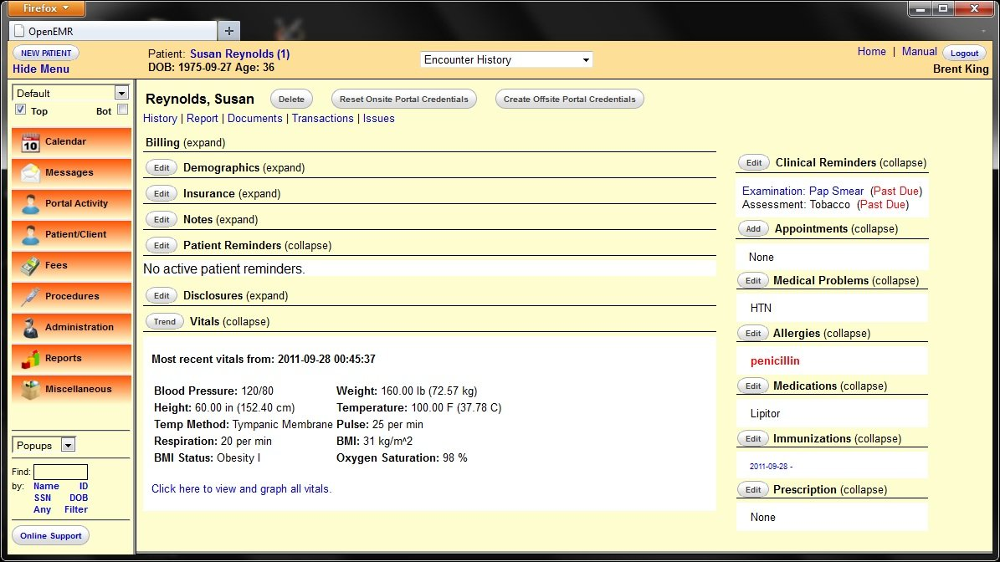
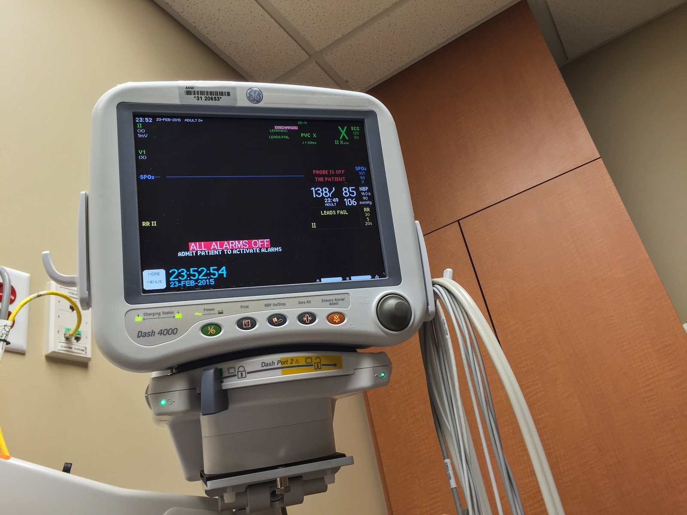
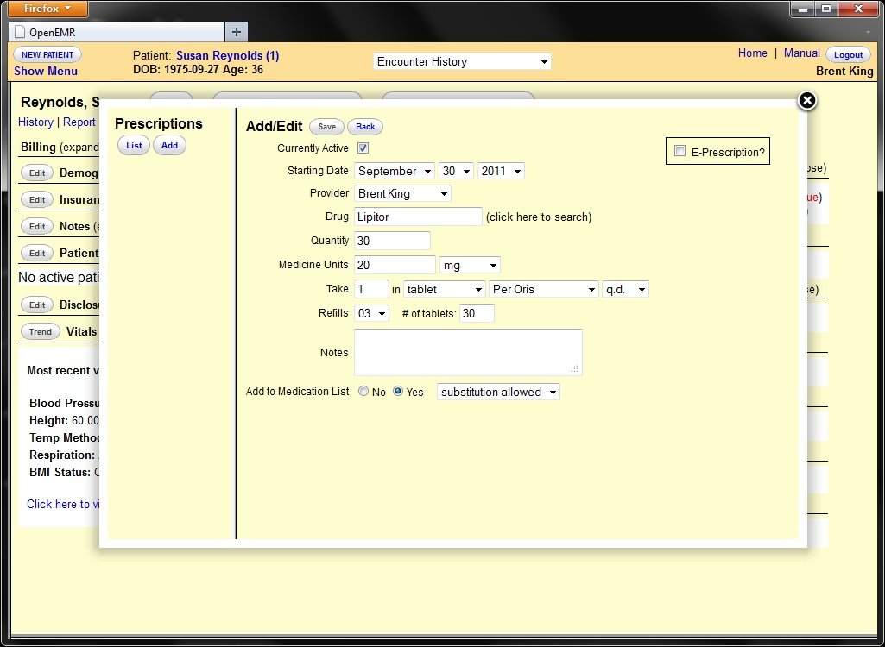
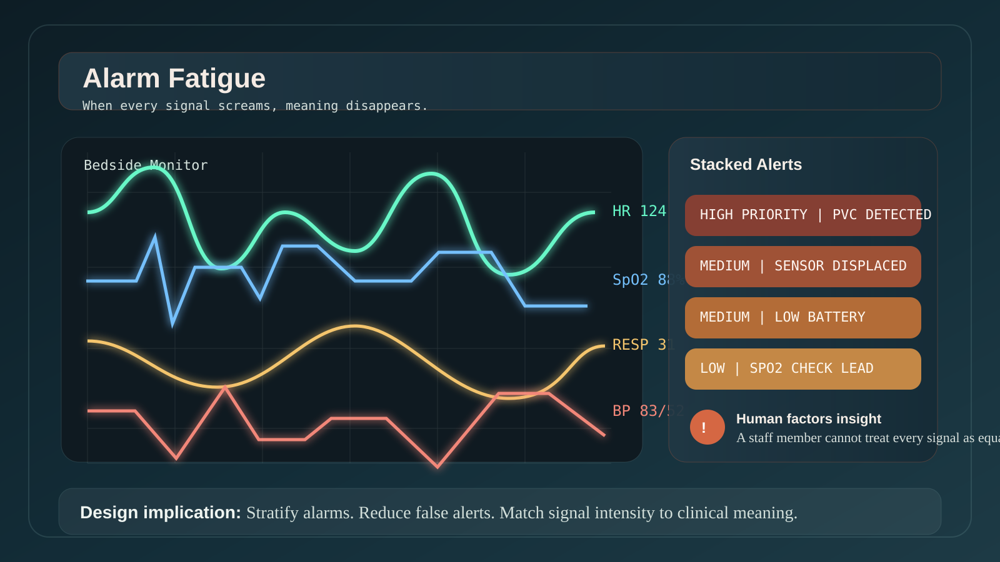
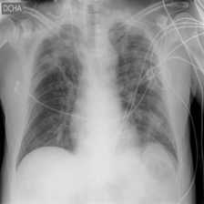
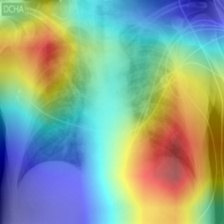
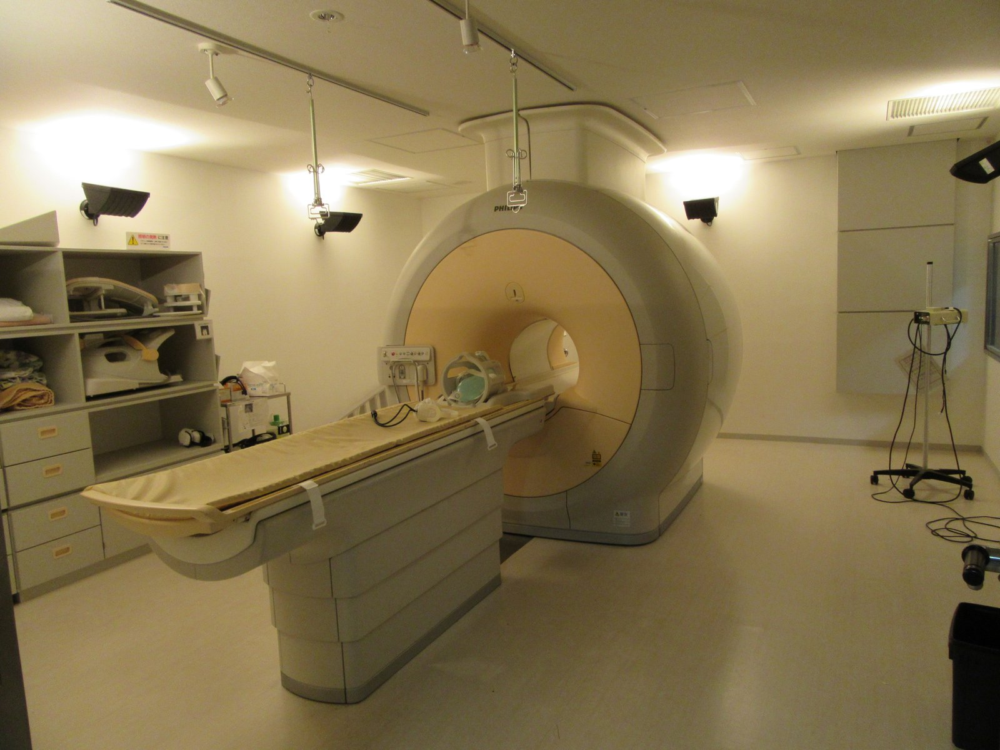
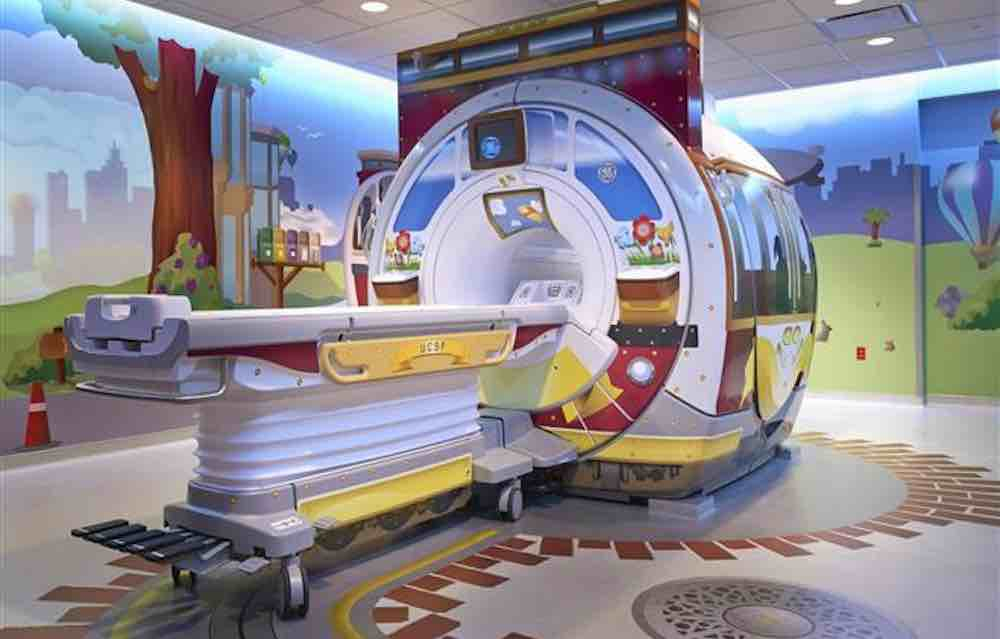
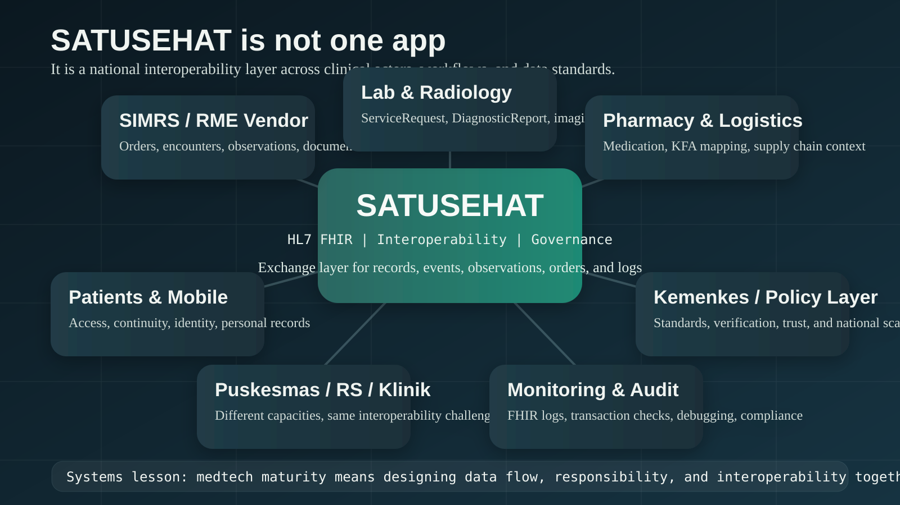

Sebagai anak teknik
- Real-time data
- Sensor dan integrasi
- Otomasi dan efisiensi
- Dashboard dan kontrol
Institut Teknologi Sepuluh Nopember
Program Studi S1 Teknologi Kedokteran
Bukan sekadar teori desain, tetapi cara berpikir untuk merancang teknologi kesehatan yang berguna, aman, masuk akal secara klinis, dan benar-benar dipakai.


Di kesehatan, antarmuka bukan sekadar layar. Ia ikut membentuk keputusan, perhatian, dan keselamatan.
Glanceability rule: jika makna penting tidak tertangkap dalam 3 detik, desainnya belum cukup baik.
Memecahkan masalah nyata bagi pasien, klinisi, caregiver, atau administrator.
Tetap dapat dipakai saat user lelah, tergesa, terganggu, atau jaringan gagal.
Bisa masuk ke workflow, budaya kerja, regulasi, dan infrastruktur nyata.
Desirability memulai inovasi. Safety dan implementasi menentukan apakah inovasi itu bertahan hidup.
Menghancurkan techno-solutionism.
Kerangka berpikir inovator medtech.
Kasus nyata, pembongkaran, dan redesign.
Red Teaming dan design sprint singkat.
Memilih jenis inovator seperti apa Anda ingin menjadi.
Startup folklore berkata "move fast and break things". Kesehatan dimulai dari prinsip: first, do no harm.
Salah desain bisa berkontribusi pada keterlambatan, salah tindakan, atau missed warning.
Pasien, dokter, perawat, farmasi, lab, admin, dan keluarga saling terhubung.
Keputusan klinis jarang deterministik. Banyak bekerja dalam probabilitas dan ambiguity.
Keletihan, kebisingan, shift panjang, dan gangguan konstan adalah kondisi normal.
Privasi, keamanan data, standar perangkat medis, dan akuntabilitas tidak bisa diabaikan.
Kesalahan di e-commerce membuat orang batal belanja. Kesalahan di klinik bisa menunda tindakan atau membahayakan pasien.
Apakah ini menyelesaikan kebutuhan nyata pengguna?
Apakah tetap aman saat user lelah, sibuk, atau memakai APD?
Apakah memperbaiki satu titik tetapi merusak unit lain?
Apakah membantu clinical reasoning, bukan menambah noise?
Apakah realistis untuk diadopsi, diintegrasikan, dan dipertahankan?
Pakai lima lensa ini untuk membaca kasus, merancang prototipe, dan mengkritik tugas akhir.
Akuisisi data kualitatif dari lapangan, bukan menebak dari lab.
Memilih problem yang tepat sebelum jatuh cinta pada solusi.
Menghasilkan banyak opsi sebelum mengunci arah.
Menguji asumsi murah dan cepat, sering kali cukup dengan kertas.
Belajar dari user nyata, bukan dari asumsi tim sendiri.
Bukan soal sticky notes. Ini soal mencegah kita jatuh cinta pada solusi yang salah.
"Perawat salah menekan tombol, berarti perawatnya ceroboh."
"Kalau tombol mudah disalahtekan, berarti desainnya membiarkan kegagalan."
Memori kerja manusia terbatas. Antarmuka padat dan alarm berlebih akan menghancurkan fokus.
IGD, ICU, rawat jalan, dan rumah pasien punya tekanan yang sangat berbeda.
Hard limits, default cerdas, dan desain tahan salah lebih kuat daripada sekadar warning pop-up.
Manusia bukan bug pada sistem. Manusia adalah bagian dari spesifikasi desain.
Unit desain yang sebenarnya bukan app, melainkan workflow dan ekosistem kerja.
Tanya: jika satu proses dipercepat, siapa yang akan overload?
Dokter bekerja dengan ketidakpastian, prioritas, dan tanggung jawab profesional.
Tanya: apakah output sistem ini bisa dipercaya dan ditindaklanjuti?
Inovasi gagal bukan hanya karena desain buruk, tetapi juga karena tidak bisa hidup di organisasi nyata.
Tanya: siapa melatih, siapa membayar, siapa menjaga integrasi?
Tanpa tiga lensa ini, Design Thinking bisa menghasilkan solusi yang menarik, tetapi rapuh saat menyentuh dunia klinis.
Untuk setiap kasus, pertanyaannya bukan "teknologinya keren atau tidak?", tetapi "di mana desainnya gagal, dan bagaimana kita memperbaikinya?"

Training tidak pernah cukup untuk menebus desain yang salah arah.
Terlalu banyak bunyi yang tidak actionable membuat staf kebal terhadap alarm.
Semua sinyal terdengar sama, padahal urgensinya berbeda.
Stratifikasi alarm, visual hierarchy, threshold kontekstual, dan eskalasi bertahap.

Ketika hampir semua bunyi terasa penting, tidak ada yang benar-benar terdengar penting.
Akses digital yang baik tidak memaksa semua orang menjadi pengguna digital ideal.
AI bisa akurat secara model, tetapi ditolak jika tidak explainable, tidak cocok dengan workflow, atau membebani tanggung jawab klinisi.

Original X-ray
Grad-CAM / HeatmapAI should be a co-pilot, not an autopilot.
Mesin MRI sangat maju secara teknis, tetapi pengalaman pasien anak penuh rasa takut dan membutuhkan sedasi lebih sering.
Solusinya bukan merombak mesin dari nol, melainkan mendesain ulang pengalaman: cerita, visual, suasana, dan makna.


Kadang yang perlu di-redesign bukan device-nya, tetapi experience-nya.
Data kesehatan tersebar di banyak silo, sulit dipertukarkan, dan menyulitkan kesinambungan layanan.
Transformasi nasional bukan cuma membuat app, tetapi menyatukan bahasa data, governance, dan interoperabilitas.
Medtech yang matang harus berpikir lintas fasilitas, lintas aktor, dan lintas standar.

Satu arsitektur sistem yang benar bisa membantu ribuan pasien. Satu asumsi desain yang salah bisa merusak dalam skala sistem.
Jika jaringan gagal, sistem turun fungsi secara aman, bukan sekadar blank.
Untuk parameter berbahaya, lebih baik lock-out dan verifikasi daripada warning lembek.
Teknologi harus audit-able, traceable, dan bisa diambil alih manusia saat perlu.
Perangkat terbaik bukan yang tidak pernah gagal, tetapi yang tahu cara gagal dengan aman.
Bukan sekadar menjawab soal, tetapi membongkar asumsi, membaca risiko, dan mendesain ulang sistem.
Output: 1 diagnosis masalah, 1 redesign utama, 1 alasan kenapa itu paling berdampak. Kalau bingung memilih, mulai dari EMR atau alarm fatigue.
Apakah IGD akan kolaps oleh false alarm?
Apa yang terjadi jika baterai habis, sensor longgar, atau koneksi putus?
Apakah saturasi rendah selalu berarti ambulans harus dikirim?
Siapa membayar, siapa memonitor, siapa bertanggung jawab?
Tugas kalian bukan langsung menyukai ide ini. Tugas kalian adalah menghancurkannya dulu, lalu menyelamatkannya.
Katarak ringan, jari tremor, gaptek, dan internet tidak stabil.
Terlalu banyak false alarm, staf mulai kebal terhadap bunyi kritis.
Pasien cemas, dokter sibuk, angka tidak punya makna bagi pengguna.
Model akurat, tetapi klinisi tidak percaya dan tidak mau memakainya.
Pilih satu kasus. Desain cepat. Presentasi singkat. Fokus pada logika desain, bukan kemewahan fitur.
Kalau desain hanya masuk akal saat user segar, desain itu belum aman.
Uji interaksi dengan sarung tangan dan kondisi basah. Touchscreen bukan jawaban untuk semua konteks.
User sering menjelaskan SOP ideal, bukan workflow nyata. Observasi memberi insight yang lebih jujur.
Gagal di kertas jauh lebih murah daripada gagal di bangsal.
Kalau nanti kalian membuat TA, prototipe, atau startup, empat hack ini akan menyelamatkan kalian dari banyak asumsi yang mahal.
Inovasi digital kesehatan adalah desain sistem, bukan sekadar desain layar.
Design Thinking membantu menemukan problem yang layak diselesaikan.
Human Factors membantu memastikan solusi tetap aman saat manusia tidak berada dalam kondisi ideal.
Systems thinking, clinical reasoning, dan implementation thinking membedakan ide bagus dari inovasi yang benar-benar bekerja.
Tugas kalian bukan membuat teknologi yang keren, tetapi teknologi yang membuat perawatan lebih aman, lebih masuk akal, dan lebih manusiawi.
Jawab dengan 3 hal: siapa user yang paling terdampak, lensa apa yang gagal, dan redesign pertama apa yang paling layak diuji. Suatu hari, sistem seperti inilah yang akan menangani keluarga kalian.